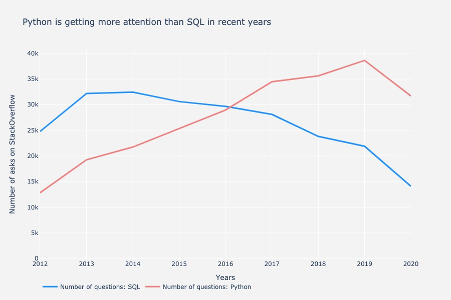
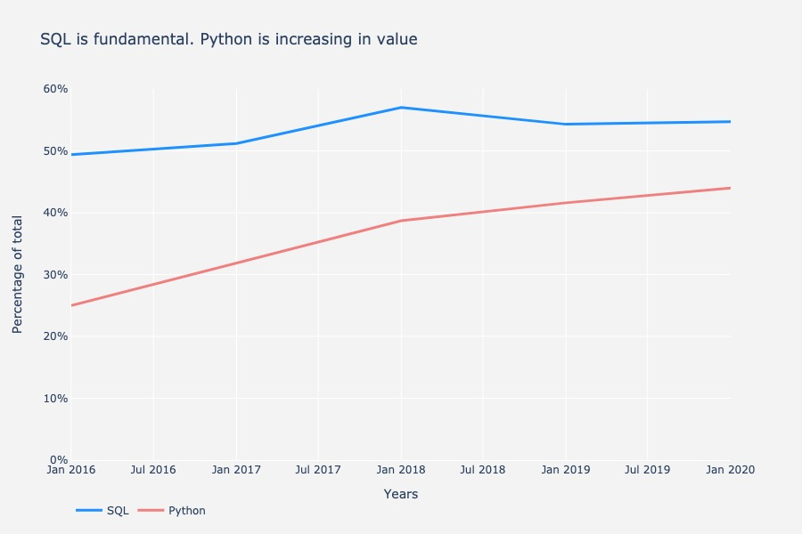
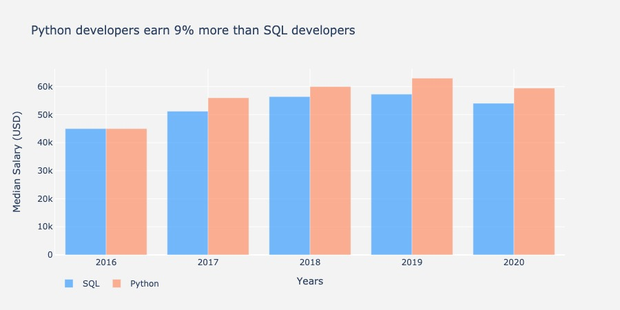

SQL versus Python, who wins?
I’m personally bombarded by articles and videos revolving around Python. Based on my experience however, SQL is the most fundamental tool that you will need from day one in any data role.
In this article I make the point that, based on my experience, SQL is the most important language you can learn when changing career and approaching data science. I started a quest to find the data that confirmed my hypothesis.
To help others that are in the process of learning SQL to understand the language faster, I started a series of lessons to explain SQL in plain English. You can find the first lesson on my YouTube channel, here
The number of asks in StackOverflow decreased in the past years.
In my opinion, SQL represents the foundational tool for any role in Analytics. At least, it has been the stepping stone to change my career.
I started my investigation around SQL by looking on Google if there were some reports or reliable sources of information regarding the usage of SQL. The only two things that I found were a report from 2014 and an article from 2015. Good starting point but I personally started my journey to data science in 2016… I wanted some newer information.
I asked myself, where do developers go when they need knowledge? I personally go often to Stack Overflow and so I started to investigate the number of asks on StackOverflow with the belief that I would find a stable number of asks for SQL. I was hoping to find an increasingly steady line that reflected the current buzz around analytics and data science roles.
To my disappointment, Stack Overflow contradicted me. When I queried the StackExchange database for the number of asks related to SQL versus the number of asks related to Python, I saw a change in the number of asks that occurred in 2016, when the Python was queried more than SQL.

SQL and Python asks on StackOverflowMy investigation of the StackExchange database shows that so far, in 2020, we had 14k questions regarding SQL (asks that have “sql” in their title). This is -35% from 2019 and -56% from 2013 (the year with the highest number of asks).
I’m a renowned stubborn. I still believe that SQL is a foundational piece of the puzzle if you want to approach the field of Analytics. That’s why I continued my quest.
SQL is a fundamental tool for all developers, not only data scientist
Only after querying the StackExchange database directly I discovered that Stack Overflow produce a yearly report… It’s good to know that my ability to research free datasets is improving! :)
The reports are overall very interesting and contain a lot of information. Too much for what I was planning to do here. That’s why I downloaded the datasets and replicated some simple visualizations to answer my question. If you are curious, you can find the dataset here for 2015, 2016, 2017, 2018, 2019 and 2020. The results of the reports (generally polling ~50k+ respondents) show an interesting picture.
Since 2016, Python has been increasingly present in the languages used by developers. However, SQL ranks higher as part of their toolkit. This data suggest that both are foundational tools for any programmer. The figure below shows the trend of the languages used by the respondents. The data was filtered for SQL or Python, however, the respondents often have many languages that they use.

SQL is used by more than half of the entire setLastly, I wanted to check the median earning value of SQL versus Python. The data was filtered by median salary, converted to USD and then plotted over time. Despite the fact that we are not considering the impact derived by the years of experience and the impact of developers using multiple languages, we can still see that there is a small gap between SQL and Python in terms of median salary. This increased in the past years with Python trending slightly higher.

Median salary in USD for respondents that use SQL versus PythonIn the end, you should learn the language that allows you to be the fastest and most efficient at investigating and manipulating data
I started this investigation with the hypothesis that, based on my personal experience, SQL is the most important language to learn if you want to kickstart your career in Analytics. Don’t get me wrong, Python is very flexible and with all the libraries available out there, it unlocks a number of powerful tools with only few lines of code.
However, I find that the real superpower of a good data geek is to seek and find information and manipulate it quickly. SQL gives you that power. I often find myself comparing SQL with Excel and I personally think that SQL is Excel 2.0. In the past, most of our society had to learn using Excel in some degree or fashion in the workplace. This will eventually happen with SQL as well, especially if you work in the tech industry.
Often SQL is undervalued in all the articles that pop up on my screen talking about data science and I think that most people start with Python thinking it will lead to an easy path to a data science role. This might be true for some, but in my experience 80% of data science is finding, collating and manipulating data. Which I think, is more easily accomplished using a language built for querying databases such as SQL.
As a mentor of mine recently told me “You use Python only when you have a clear idea of what you want to do”. Following this advice, SQL is my playground, while Python is the language that I use when I already know what to build or prototype.
Thoughts? You have a different (or similar) opinion? Get in touch! Comment below, reach out on my YouTube channel or contact me on LinkedIn.
It is not because things are difficult that we do not dare; it is because we do not dare that things are difficult.. L.A. Seneca